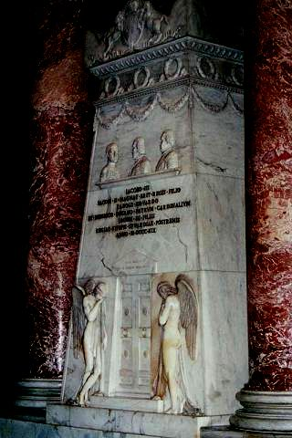

An Suaithneas Bàn
Le Uilleam Ros
Farewell to the White Cockade
Adieu à la Cocarde Blanche
by/par William Ross

Charles Edward Stuart's tomb in the crypt of St Peter's in Rome.
Monument by Canova, also dedicated to his father and brother, commissioned in 1819 by Pope Pius VII.
The Prince Regent who afterwards became King George IV made a gift of £50.
Tune "An Suaithneas"
Sequenced by Christian Souchon
(Source: "Highland songs of the '45" - John Lorne Campbell who recorded the singing of Roderick McKinnon aka
'Ruairi Iain Bhain at Northbay, Barra, on 17.03.1988. This tune is similar to Mort Ghlinne-Comhainn - Massacre of Glencoe.)
Same tune:
Sung by Roderick McKinnon
Sheet music - Partition

|
FAREWELL TO THE WHITE COCKADE
Chorus Farewell to the White Cockade Till Doomsday he in death is laid, The grave has ta'en the White Cockade, The cold tombstone is now his shade. 1. As I walked across the hill On Sunday, and a friend with me, We read together a letter's news No joyful tale we gathered there. 2. Ancient Scot1and! a tale of woe Every sea-wave breaking brings, That thy royal heir is now in Rome Earthed in chest of polished boards. 3. Heavily I sigh each day, Oft my thoughts are far away; False the world, and sad the fate That all flesh is to death a prey. 4. Now my heart is broken, weak, And my tears run like a stream, Though I hid this at the time It's broken forth, I do not mind. 5. For a while I had firm faith That thy war-cry would be heard, The fleet of Prince Charles coming o'erseas, But now we'll ne"er meet till Doomsday. 6. Many a hero mighty, brave, To-day in Scotland mourns for thee, In secret are they shedding tears Who keenly would have followed thee. 7. And unhappy, downcast, tired, Are thy followers everywhere; An active band of mighty strength Ready, practised in the strife. 8. Now the sweet harpists shall bow In the treetops their heads in woe, Every live thing on strath or ben Shall mourn with us the loss they share. 9. Each hill-slope and mountainside On which we ever saw thee move, Now has lost its form and hue Since thou ne'er shalt come again. 10. The younger folk who saw thee ne'er Love and esteem did tend for thee, But now their hearts have fallen low Since thou hast gone to sleep for e'er. 11. But let our prayers early rise To the One who is on high, Never on us to avenge The wrong we did the White Cockade. 12. But though our clergy's good, I fear, Despite all joys their lips foretell, That we'll be seen a' shedding tears For the White Cockade that's gone. 13. Let us now give a glad farewell To him who shall go far away, Towards the place where lies the star Would banish from us grief and cloud. 14. And let us be happy with what is, Since we may not better be, Our journey here will be but short, We too shall follow the White Cockade. Farewell to the White Cockade Till Doomsday he in death is laid, The grave has ta'en the White Cockade, The cold tombstone is now his shade. Transl. from the Gaelic by John Lorne Campbell, "Highland Songs of the '45" - 1932) |
SORAIDH BHUAN DO'N t-SUAITHNEAS BHAN
Co'-sheirm Soraidh bhuan do'n t-Suaithneas Bhan, Gu La Luain cha ghluais o'n bhas; Ghlac an uaigh an Suaithneas Ban, Is leacan fuaraidh tuam' a thamh. 1. Air bhith dhomhsa triall thar druim Air Di-Domhnaich 's comhlan liom, Leughas litir naidheachd linn, 'S cha sgeul ait a thachair innt'. 2. Albainn arsaidh ! 's fathunn broin Gach aon mhuir-bhaitht' tha barcadh oirnn, Toighre rioghail bhith 'san Roimh Tirt' an caol-chist liomhta bhord. 3. 'S trom liom m'osnaich anns gach la, 'S tric mo smuaintean fad' o laimh; Cluain an domhain, truagh an dail, Gur cobhartach gach feoil do'n bhas. 4. Tha mo chridhe gu briste, fann, 'S deoir mo shul a'ruith mar allt; Ge do cheilinn sud air am Bhruchd e mach's cha mhisde leam. 5. Bha mi seal am barail chruaidh Gun cluinnte caismeachd mu'n cuairt, Cabhlach rI'hearlaich thighinn air chuan, Ach threig an dail mi gu Là Luain. 6. 'S llonmhor laoch us milidh treun Tha an diu an Albainn as do dheidh, Iad os n-losal sileadh dheur, A rachadh dian leat anns an t-streup. 7. 'S gur neo-shubhach, dubhach, sgith Do threud ionmhuinn anns gach tir, Buidheann mheanmnach bu gharg cli, Ullamh, arm-chleasach 'san t-strith. 8. Nis cromaidh na cruiteirean binn Am barraibh dhos fo sprochd an cinn, Gach beo bhiodh ann an srath no 'm beinn A' caoi an comh-dhosgainn leinn. 9. Tha gach beinn, gach cnoc, 's gach sliabh Air am faca sinn thu triall, Nis air call an dreach's am fiamh O nach tig thu chaoidh nan cian. 10. Bha 'n t-al og nach fhac' thu riamh Ag altrum graidh dhuit agUS miadh, Ach thuit an cridhe nis 'nan cliabh O'n a chaidil thu gu sior. 11. Ach biodh ar n-urnuigh moch gach la Ris an Ti as aird' ata, Gun e dhioladh oirnn gu brath Ar n-eucoir air an t-Suaithneas Bhàn. 12. Ach 's eagal leam ge math a chlèir, 'S gach sonas gheallair dhuinn le'm beul, Gu'm faicear sinn a' sileadh dheur, A chionn an suaithneas bàn a thrèig. 13. Cuireamaid soraidh uainn gu rèidh Leis na dh'imicheas an cèin, Dh'ionnsaidh an àit' na laidh an reull, Dh'fhògradh uainn gach gruaim a's neul. 14. 'S bitheamaid toilicht' leis na tha, O nach d' fhaod sinn bhi na's fearr, Cha bhi n-ar cuairt an so ach gearr, A's leanaidh sinn an Suaithneas Bàn, Soraidh bhuan do'n t-Suaithneas Bhàn, Gu la-Iuain cha ghluais o'n bhàs; Ghlac an uaigh an Suaithneas Bàn 'S leacan luaraidh tuaim' a thàmh! |
ADIEU A LA COCARDE BLANCHE
REFRAIN Adieu donc, la Blanche Cocarde! Va jusqu'au jour du Jugement Orner le front de la Camarde! Le froid tombeau garde l'Errant. 1. Dimanche, allant parmi les dunes En compagnie de mon ami Je reçus un mot que nous lûmes Et nous en fûmes fort marris. 2. Vieille Ecosse, triste nouvelle Que les vagues vont répétant: Ton royal fils, perte cruelle, Gît à Rome en un cercueil blanc. 3. Mon émotion est à son comble. Au loin vont mes pensers amers. Le monde est laid, le sort bien sombre Qui livre à la mort toute chair. 4. Et ma douleur est la plus forte. Mes larmes coulent à torrents. Jadis je les cachais, qu'importe, Qu'elles s'échappent librement! 5. Longtemps j'ai nourri l'espérance D'entendre un jour ton cri guerrier, Que tes bateaux viendraient de France Avant le Jugement Dernier. 6. Plus d'un Ecossais fort et brave Que la peine étreint aujourd'hui Avec pudeur ses pleurs entrave. Sans hésiter, il t'eût suivi. 7. Tristes, abattus et exsangues Tes partisans ne manquaient pas; Actives et puissantes bandes Prêtes et rompues au combat. 8. Le vent dont chaque arpège incline Des arbres les cimes meurtries, Chaque créature devine Notre deuil et s'y associe. 9. Les sommets des monts et les pentes Où jadis nous suivions tes pas, Ont perdu leur forme, leur teinte Puisque tu ne reviendras pas. 10. Nos cadets, qui ne te connaissent Que de nom, voulaient te servir. Cette mort soudaine les lèse, Les privant de ton souvenir. 11. Vers le Très-Haut que nos prières Montent; qu'Il veuille pardonner Le mal qu'à la Cocarde altière On fit et ne point le venger. 12. Le prêtre parle comme un livre. Mais, je le crains, tous vont pleurer. La Cocarde absente nous prive De toutes les joies qu'il promet. 13. A celui qui de nous s'éloigne Disons donc un dernier adieu. Sa place est désormais l'étoile Qui bannit la brume des cieux. 14. Ne pensons plus à la revanche Nous ne pouvons changer plus rien. Nous suivrons la Cocarde Blanche: Notre errance bientôt prend fin. Adieu donc, la Blanche Cocarde! Va jusqu'au jour du Jugement Orner le front de la Camarde! Le froid tombeau garde l'Errant! (Trad. Ch. Souchon (c) 2009) |
|
Prince Charles Edward Stuart died in Rome on 31st January 1788. The White Cockade was the Jacobite emblem. Ross uses the expression for the Prince himself.
William Ross (1762 - 1790) was born in the Isle of Skye. His mother was a daughter of a poet, John McKay. After leaving school, William accompanied his father, a pedlar, on his errands all over the Highlands, thus learning the different Gaelic dialects. Later he was appointed parish schoolmaster, a position he occupied till his early death in 1790, caused by a weak constitution and an unfortunate love affair which much preyed upon his mind. His poems were first collected and published in 1830 by John McKenzie in "Sar-Obair". His Gaelic is free from anglicisms but his themes are often of trivial interest. He wrote two Jacobite songs that are the last echoes of the '45 in the Highlands: a song on the repeal of the Disclothing Act in 1782 and the present dirge, a pathetic song on the death in Rome of Prince Charles Stuart in 1788, demonstrating that the memories of the '45 had not faded 44 years after these memorable events. |
Le Prince Charles Edouard Stuart mourut à Rome le 31 janvier 1788. La Cocarde Blanche était l'emblème des Jacobites. Ross utilise l'expression pour désigner le Prince lui-même.
William Ross (1762 - 1790) était né dans l'île de Skye. Sa mère était la fille du poète John McKay. Après avoir quitté l'école, William accompagna son père, colporteur, un peu partout dans les Highlands et il se familiarisa avec tous les dialectes gaéliques. Plus tard il fut engagé comme instituteur de paroisse et le resta jusqu'à sa mort prématurée, en 1790, causée par sa faiblesse chronique et une déception sentimentale qui mina son moral. Ses poèmes furent collectés et publiés pour la première fois en 1830 par John McKenzie dans ses "Sar Obair" (Chefs d'oeuvre de la poésie gaélique). Son gaélique est pur de tout anglicisme mais les thèmes qu'il traite sont souvent sans intérêt. Il écrivit deux chants Jacobites qui sont les derniers échos de l'épopée de 1745: un chant sur la révocation de l'interdiction du kilt en 1782; et la présente élégie, un chant pathétique à propos du décès du Prince, survenu à Rome en 1788. Elle montre à quel point était encore vivace, 43 ans après, le souvenir des événements de 1745. |
|
des chants étudiés dans ELF JAKOBITENLIEDER IN GÄLISCHER SPRACHE un essai en allemand au format LIVRE DE POCHE 
de Christian Souchon |
zu der Abhandlung ELF JAKOBITENLIEDER IN GÄLISCHER SPRACHE einem deutschsprachigen TASCHENBUCH
von Christian Souchon |
is one of the songs studied in ELF JAKOBITENLIEDER IN GÄLISCHER SPRACHE presented in German as a PAPERBACK BOOK
by Christian Souchon |
Cliquer sur le lien ou l'image - Klicke auf den Link oder auf das Bild - Click link or picture for more info